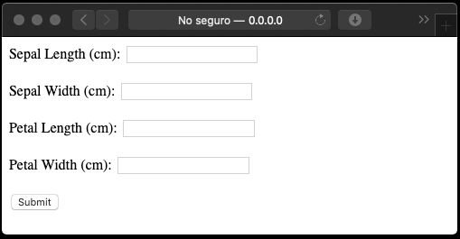
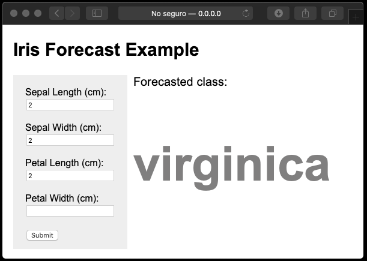

Desarrollo de una APP para clasificar las flores IRIS usando SDG¶
60 min | Última modificación: Junio 22, 2019.
Bibliografia.
Learning scikit-learn: Machine Learning in Python. R. Garreta, G. Moncecchi. Packt Publishing, 2013.
Monetizing Machine Learning. M. Amunaategui, M. Roopaei. Apress, 2018.
Definición del problema¶
Se desea desarrollar una app que permita la identificación del tipo de flor (virginica, setosa, versicolor) a partir de la medición del tamaño del sépalo y el pétalo.

Para dearrollar el modelo se tienen 150 medidiciones del ancho y el largo del sépalo y el pétalo para las tres especies de la flor Iris, con 50 mediciones para cada especie. La app debe implementar un clasificador que pronostique la especie de la flor a partir de dichas mediciones.
[1]:
#
# los datos se encuentran disponibles directamente en scikit-learn
#
from sklearn import datasets
data = datasets.load_iris()
print(data.DESCR)
.. _iris_dataset:
Iris plants dataset
--------------------
**Data Set Characteristics:**
:Number of Instances: 150 (50 in each of three classes)
:Number of Attributes: 4 numeric, predictive attributes and the class
:Attribute Information:
- sepal length in cm
- sepal width in cm
- petal length in cm
- petal width in cm
- class:
- Iris-Setosa
- Iris-Versicolour
- Iris-Virginica
:Summary Statistics:
============== ==== ==== ======= ===== ====================
Min Max Mean SD Class Correlation
============== ==== ==== ======= ===== ====================
sepal length: 4.3 7.9 5.84 0.83 0.7826
sepal width: 2.0 4.4 3.05 0.43 -0.4194
petal length: 1.0 6.9 3.76 1.76 0.9490 (high!)
petal width: 0.1 2.5 1.20 0.76 0.9565 (high!)
============== ==== ==== ======= ===== ====================
:Missing Attribute Values: None
:Class Distribution: 33.3% for each of 3 classes.
:Creator: R.A. Fisher
:Donor: Michael Marshall (MARSHALL%PLU@io.arc.nasa.gov)
:Date: July, 1988
The famous Iris database, first used by Sir R.A. Fisher. The dataset is taken
from Fisher's paper. Note that it's the same as in R, but not as in the UCI
Machine Learning Repository, which has two wrong data points.
This is perhaps the best known database to be found in the
pattern recognition literature. Fisher's paper is a classic in the field and
is referenced frequently to this day. (See Duda & Hart, for example.) The
data set contains 3 classes of 50 instances each, where each class refers to a
type of iris plant. One class is linearly separable from the other 2; the
latter are NOT linearly separable from each other.
.. topic:: References
- Fisher, R.A. "The use of multiple measurements in taxonomic problems"
Annual Eugenics, 7, Part II, 179-188 (1936); also in "Contributions to
Mathematical Statistics" (John Wiley, NY, 1950).
- Duda, R.O., & Hart, P.E. (1973) Pattern Classification and Scene Analysis.
(Q327.D83) John Wiley & Sons. ISBN 0-471-22361-1. See page 218.
- Dasarathy, B.V. (1980) "Nosing Around the Neighborhood: A New System
Structure and Classification Rule for Recognition in Partially Exposed
Environments". IEEE Transactions on Pattern Analysis and Machine
Intelligence, Vol. PAMI-2, No. 1, 67-71.
- Gates, G.W. (1972) "The Reduced Nearest Neighbor Rule". IEEE Transactions
on Information Theory, May 1972, 431-433.
- See also: 1988 MLC Proceedings, 54-64. Cheeseman et al"s AUTOCLASS II
conceptual clustering system finds 3 classes in the data.
- Many, many more ...
Desarrollo del clasificador¶
Carga y partición de los datos¶
[2]:
#
# Carga de datos.
# Se verifica la cantidad de datos de la muestra
#
X, y = data.data, data.target
print(X.shape, y.shape)
(150, 4) (150,)
[3]:
#
# Nombres de las variables independientes
#
data.feature_names
[3]:
['sepal length (cm)',
'sepal width (cm)',
'petal length (cm)',
'petal width (cm)']
[4]:
#
# Nombres de las clases de salida
#
data.target_names
[4]:
array(['setosa', 'versicolor', 'virginica'], dtype='<U10')
[5]:
#
# Codificación de la clase a la que pertence cada instancia
#
data.target
[5]:
array([0, 0, 0, 0, 0, 0, 0, 0, 0, 0, 0, 0, 0, 0, 0, 0, 0, 0, 0, 0, 0, 0,
0, 0, 0, 0, 0, 0, 0, 0, 0, 0, 0, 0, 0, 0, 0, 0, 0, 0, 0, 0, 0, 0,
0, 0, 0, 0, 0, 0, 1, 1, 1, 1, 1, 1, 1, 1, 1, 1, 1, 1, 1, 1, 1, 1,
1, 1, 1, 1, 1, 1, 1, 1, 1, 1, 1, 1, 1, 1, 1, 1, 1, 1, 1, 1, 1, 1,
1, 1, 1, 1, 1, 1, 1, 1, 1, 1, 1, 1, 2, 2, 2, 2, 2, 2, 2, 2, 2, 2,
2, 2, 2, 2, 2, 2, 2, 2, 2, 2, 2, 2, 2, 2, 2, 2, 2, 2, 2, 2, 2, 2,
2, 2, 2, 2, 2, 2, 2, 2, 2, 2, 2, 2, 2, 2, 2, 2, 2, 2])
[6]:
#
# Nombre de la clase a la que pertenece cada instancia
#
data.target_names[data.target]
[6]:
array(['setosa', 'setosa', 'setosa', 'setosa', 'setosa', 'setosa',
'setosa', 'setosa', 'setosa', 'setosa', 'setosa', 'setosa',
'setosa', 'setosa', 'setosa', 'setosa', 'setosa', 'setosa',
'setosa', 'setosa', 'setosa', 'setosa', 'setosa', 'setosa',
'setosa', 'setosa', 'setosa', 'setosa', 'setosa', 'setosa',
'setosa', 'setosa', 'setosa', 'setosa', 'setosa', 'setosa',
'setosa', 'setosa', 'setosa', 'setosa', 'setosa', 'setosa',
'setosa', 'setosa', 'setosa', 'setosa', 'setosa', 'setosa',
'setosa', 'setosa', 'versicolor', 'versicolor', 'versicolor',
'versicolor', 'versicolor', 'versicolor', 'versicolor',
'versicolor', 'versicolor', 'versicolor', 'versicolor',
'versicolor', 'versicolor', 'versicolor', 'versicolor',
'versicolor', 'versicolor', 'versicolor', 'versicolor',
'versicolor', 'versicolor', 'versicolor', 'versicolor',
'versicolor', 'versicolor', 'versicolor', 'versicolor',
'versicolor', 'versicolor', 'versicolor', 'versicolor',
'versicolor', 'versicolor', 'versicolor', 'versicolor',
'versicolor', 'versicolor', 'versicolor', 'versicolor',
'versicolor', 'versicolor', 'versicolor', 'versicolor',
'versicolor', 'versicolor', 'versicolor', 'versicolor',
'versicolor', 'versicolor', 'versicolor', 'virginica', 'virginica',
'virginica', 'virginica', 'virginica', 'virginica', 'virginica',
'virginica', 'virginica', 'virginica', 'virginica', 'virginica',
'virginica', 'virginica', 'virginica', 'virginica', 'virginica',
'virginica', 'virginica', 'virginica', 'virginica', 'virginica',
'virginica', 'virginica', 'virginica', 'virginica', 'virginica',
'virginica', 'virginica', 'virginica', 'virginica', 'virginica',
'virginica', 'virginica', 'virginica', 'virginica', 'virginica',
'virginica', 'virginica', 'virginica', 'virginica', 'virginica',
'virginica', 'virginica', 'virginica', 'virginica', 'virginica',
'virginica', 'virginica', 'virginica'], dtype='<U10')
[7]:
#
# Partición de los datos en conjuntos de entrenamiento y prueba
#
from sklearn.model_selection import train_test_split
X_train, X_test, y_train, y_test = train_test_split(X, y, test_size=0.25, random_state=33)
[8]:
#
# Dimensiones de las variables del conjunto de entrenamiento
#
print(X_train.shape, y_train.shape)
(112, 4) (112,)
[9]:
#
# Dimensiones de las variables del conjunto de prueba
#
print(X_test.shape, y_test.shape)
(38, 4) (38,)
Preprocesamiento¶
[10]:
#
# Diagrama de caja y bigote que muestra la distribución
# de las variables independientes
#
import seaborn as sns
import pandas as pd
import matplotlib.pyplot as plt
sns.boxplot(data=pd.DataFrame(X_train, columns = data.feature_names))
plt.xticks(rotation=90);

[11]:
#
# Escalamiento de los datos
# El StandardScaler remueve la media de los datos y
# luego los divide por su desviación estándar
#
from sklearn.preprocessing import StandardScaler
# Crea el preprocesador
scaler = StandardScaler()
# Entrena el preprocesador. Note que se calcula
# unicamente para el conjunto de entrenamiento
scaler.fit(X_train)
# Escala los conjuntos de entrenamiento y prueba
X_train = scaler.transform(X_train)
X_test = scaler.transform(X_test)
# Efecto del StandardScaler
sns.boxplot(data=pd.DataFrame(X_train, columns = data.feature_names))
plt.xticks(rotation=90);
Creación y entrenamiento del clasificador¶
[12]:
from sklearn.linear_model import SGDClassifier
# Crea y parametriza el clasificador
clf = SGDClassifier(max_iter=10, tol=None)
# Entrena el clasificador
clf.fit(X_train, y_train)
# Valores del intercepto de los clasificadores
print(clf.coef_)
print()
# Valores de los coeficientes de los atributos escalados
print(clf.intercept_)
[[ -5.02338417 11.50955353 -15.00750783 -14.54976528]
[ -7.94145139 -0.20378732 14.50179462 -29.6724453 ]
[ -6.01239353 -0.40757464 30.31469757 34.68119491]]
[ -9.52836026 -20.17760991 -52.51058698]
Métricas de desempeño usando partición de los datos en entrenamiento y validación¶
[13]:
from sklearn import metrics
# Pronóstico para el conjunto de entrenamiento
y_train_pred = clf.predict(X_train)
# Precisión para el conjunto de entrenamiento
metrics.accuracy_score(y_train, y_train_pred)
[13]:
0.8214285714285714
[14]:
# Precisión para el conjunto de prueba
y_pred = clf.predict(X_test)
metrics.accuracy_score(y_test, y_pred)
[14]:
0.7368421052631579
[15]:
#
# Métricas de evaluación
#
print(metrics.classification_report(y_test, y_pred, target_names=data.target_names))
precision recall f1-score support
setosa 0.62 1.00 0.76 8
versicolor 1.00 0.09 0.17 11
virginica 0.79 1.00 0.88 19
accuracy 0.74 38
macro avg 0.80 0.70 0.60 38
weighted avg 0.81 0.74 0.65 38
[16]:
#
# Matriz de confusión
#
metrics.confusion_matrix(y_test, y_pred)
[16]:
array([[ 8, 0, 0],
[ 5, 1, 5],
[ 0, 0, 19]])
[17]:
from sklearn.metrics import plot_confusion_matrix
#
# Note que la función computa internamente
# el pronósitco del clasificador
#
plot_confusion_matrix(
clf, # clasificador entrenado
X_test, # matriz de variables de entrada
y_test); # valor real

Pregunta.— ¿Es posible mejorar la distribución de la matriz de confusión usando otras métricas de error?
Construcción de un pipeline¶
[18]:
#
# Esta es la estrategia real para implementar modelos
# El pipeline empaqueta todas las operaciones requeridas
# por el clasificador.
#
from sklearn.pipeline import Pipeline
clf = Pipeline([
('scaler', StandardScaler()),
('linear_model', SGDClassifier(max_iter=10, tol=None))
])
Evaluación del desempeño (del pipeline) usando validación cruzada¶
[19]:
#
# Computa la precisión usando validación cruzada
#
from sklearn.model_selection import cross_val_score
from scipy.stats import sem
import numpy as np
scores = cross_val_score(
clf, # clasificador
X, #
y, #
cv=10) # Número de particiones para realizar validación cruzada
print(scores)
print("Mean score: {0:.3f} (+/- {1:.3f})".format(np.mean(scores), sem(scores)))
[1. 1. 1. 0.93333333 0.86666667 0.93333333
0.73333333 0.93333333 1. 1. ]
Mean score: 0.940 (+/- 0.027)
Almacenamiento y restauración del (pipeline) modelo¶
[20]:
#
# Se entrena el modelo definitivo
#
clf.fit(X, y); # este es el pipeline
[21]:
#
# Almacenamiento en disco
#
import pickle
# Abre el archivo en disco modo binario para escritura
with open('clf.pickle', 'wb') as f:
pickle.dump(clf, f, pickle.HIGHEST_PROTOCOL)
[22]:
#
# Se verifica que el modelo quedo
# almacenado en disco
#
!ls *.pickle
clf.pickle
[23]:
#
# Lectura desde el disco
#
with open('clf.pickle', 'rb') as f:
new_clf = pickle.load(f)
# verificación
new_clf.predict(X)
[23]:
array([0, 0, 0, 0, 0, 0, 0, 0, 0, 0, 0, 0, 0, 0, 0, 0, 0, 0, 0, 0, 0, 0,
0, 0, 0, 0, 0, 0, 0, 0, 0, 0, 0, 0, 0, 0, 0, 0, 0, 0, 0, 1, 0, 0,
0, 0, 0, 0, 0, 0, 1, 1, 2, 1, 2, 1, 1, 1, 1, 1, 1, 1, 1, 1, 1, 1,
1, 1, 2, 1, 2, 1, 2, 1, 1, 1, 1, 2, 1, 1, 1, 1, 1, 2, 1, 0, 1, 1,
1, 1, 1, 1, 1, 1, 1, 1, 1, 1, 1, 1, 2, 2, 2, 2, 2, 2, 2, 2, 2, 2,
2, 2, 2, 2, 2, 2, 2, 2, 2, 2, 2, 2, 2, 2, 2, 2, 2, 2, 2, 2, 2, 2,
2, 2, 2, 2, 2, 2, 2, 2, 2, 2, 2, 2, 2, 2, 2, 2, 2, 2])
Desarrollo de la APP usando Flask¶
Se separa el desarrollo y entrenamiento del clasificador de la aplicación que lo despliega en productivo.
Funcionalidad¶
[24]:
!mkdir -p app
!mkdir -p app/templates
!cp clf.pickle app/
[25]:
%%writefile app/app.py
import pickle
from flask import Flask, request, flash, render_template
app = Flask(__name__)
app.config['SECRET_KEY'] = 'you-will-never-guess'
@app.route("/", methods=["GET", "POST"])
@app.route("/index", methods=("GET", "POST"))
def index():
if request.method == 'POST':
# Nombres de las clases
classnames = ['setosa', 'versicolor', 'virginica']
# Lee los valores de las cajas de texto de la interfaz
sepal_length = float(request.form["sepal_length"])
sepal_width = float(request.form["sepal_width"])
petal_length = float(request.form["petal_length"])
petal_width = float(request.form["petal_width"])
X = [[sepal_length, sepal_width, petal_length, petal_width]]
with open("clf.pickle", "rb") as f:
clf = pickle.load(f)
result = classnames[ clf.predict(X)[0] ]
else:
result = ''
return render_template("index.html", result=result)
if __name__ == "__main__":
app.run(host='0.0.0.0', debug=True)
Overwriting app/app.py
[26]:
%%writefile app/templates/index.html
<!DOCTYPE html>
<html lang="en">
<head>
<meta charset="utf-8">
<title>IrisPredictor</title>
</head>
<body>
<nav>
<form id='myDialog' method="POST">
<label for="fname">Sepal Length (cm):</label>
<input type="text" id="sepal_length" name="sepal_length"><br><br>
<label for="fname">Sepal Width (cm):</label>
<input type="text" id="sepal_width" name="sepal_width"><br><br>
<label for="fname">Petal Length (cm):</label>
<input type="text" id="petal_length" name="petal_length"><br><br>
<label for="fname">Petal Width (cm):</label>
<input type="text" id="petal_width" name="petal_width"><br><br>
<input type="submit" value="Submit">
</form>
</nav>
<div>
<p> {{ result }} </p>
</div>
</body>
</html>
Overwriting app/templates/index.html
Ejecute la aplicación desde el Terminal con:
python3 app.py
La primera vez que ejecute la aplicación, se presentará la siguiente interfaz:

Una vez se llenen los campos, el boton Submit hace el cálculo y refresca la pantalla con el resultado:

Aspecto¶
El aspecto de la app se puede modificar usando CSS, tal como es usual en el diseño de páginas web.
[27]:
%%writefile app/templates/index.html
<!DOCTYPE html>
<html lang="en">
<head>
<meta charset="utf-8">
<title>IrisPredictor</title>
<style>
body {
font-family: Arial, Helvetica, sans-serif;
padding-left: 10px;
}
header {
font-size: 20px;
}
nav {
float: left;
width: 150px;
height: 250px;
background: #eeeeee;
padding: 20px;
}
div {
padding-left: 200px;
}
.seltext {
font-size: 20px;
}
.resulttext {
font-weight: bold;
font-size: 80px;
color: #807F7F;
}
</style>
</head>
<body>
<header>
<h2>Iris Forecast Example</h2>
</header>
<nav>
<form id='myDialog' method="POST">
<label for="fname">Sepal Length (cm):</label> <br>
<input type="text" id="sepal_length" name="sepal_length"><br><br>
<label for="fname">Sepal Width (cm):</label> <br>
<input type="text" id="sepal_width" name="sepal_width"><br><br>
<label for="fname">Petal Length (cm):</label> <br>
<input type="text" id="petal_length" name="petal_length"><br><br>
<label for="fname">Petal Width (cm):</label> <br>
<input type="text" id="petal_width" name="petal_width"><br><br>
<input type="submit" value="Submit">
</form>
</nav>
<div>
<p class="seltext">Forecasted class:</p>
<p class="resulttext"> {{ result }} </p>
</div>
</body>
</html>
Overwriting app/templates/index.html
